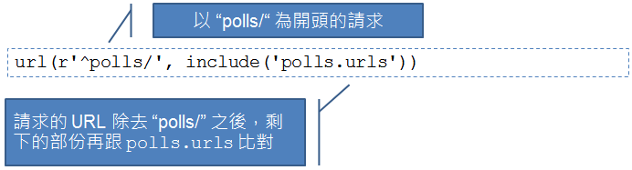
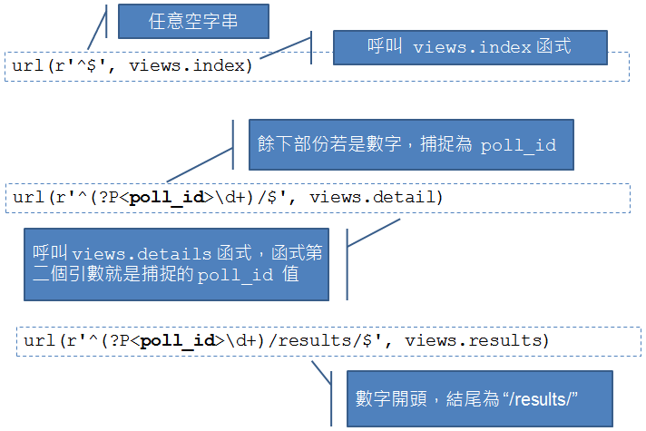

瞭解如何使用 Django 基本的 ORM 操作之後，現在該是來撰寫第一個 View 的時候了，我們直接從練習中來瞭解如何撰寫。
練習 11：撰寫第一個 View
開啟 polls/views.py，在當中撰寫如下的程式碼：
from django.http import HttpResponse
def index(request):
return HttpResponse("Hello, world. You're at the poll index.")
def detail(request, poll_id):
return HttpResponse("You're looking at poll {id}.".format(id = poll_id))
def results(request, poll_id):
return HttpResponse("You're looking at the results of poll {id}.".format(id = poll_id))
def vote(request, poll_id):
return HttpResponse("You're voting on poll {id}.".format(id = poll_id))這兒的四個函式，將對應至不同的 URL 請求，目前只是簡單的作些字串顯示。每個函式的第一個參數，實際上會是
HttpRequest 實例，封裝了關於請求的相關資料，有些 URL 請求會帶有 poll_id 請求參數，這可以在函式的第二個參數取得請求值。
每個 URL 請求該如何對應至函式，可以在 polls 目錄下建立一個 urls.py 檔案進行定義：
from django.conf.urls import patterns, url
from polls import views
urlpatterns = patterns('',
# ex: /polls/
url(r'^$', views.index, name='index'),
# ex: /polls/5/
url(r'^(?P<poll_id>\d+)/$', views.detail, name='detail'),
# ex: /polls/5/results/
url(r'^(?P<poll_id>\d+)/results/$', views.results, name='results'),
# ex: /polls/5/vote/
url(r'^(?P<poll_id>\d+)/vote/$', views.vote, name='vote'),
)
url如果你仔細看上頭的規則表示式定義，會發現並沒有定義
polls 前置名稱，實際上這是在 mysite 目錄中的 urls.py 定義。例如：
from django.conf.urls import patterns, include, url
urlpatterns = patterns('',
url(r'^polls/', include('polls.urls'))
)這個 urls.py 定義了全名的 URL 對應，在上頭可以看到定義了
polls 前置名稱下，接下來的規則是包括在 polls.urls，也就是方才在 polls 目錄中定義的 urls.py 中。
完成以上定義之後，可以鍵入指令
python manage.py runserver，然後分別用瀏覽器請求不同網站，你應該會看到以下結果：
{kind=link}
Controller 還是 View？
如果你曾使用過其他的 Web MVC 框架，可能會對這個練習感到疑惑，為什麼處理請求的函式是定義在 views.py 這樣的檔案名稱之中？在其他框架中，你知道處理請求參數不都是 Controller 嗎？就名稱上來說，哪個才是標準名稱，其實是有爭議的；不過在 Django 之中，將特定 URL 對應的回呼函式認定為 View，那麼 Django 中 Controller 是在哪邊？也許就是 Django 框架本身！
實際上，大部份 Web MVC 框架確實也都會有一些請求的前置處理，當請求到達實際的 Controller 時，對請求要進行的處理，通常就是（或最好）只剩下轉發請求給商務 Model，取得樣版（Template）引擎必要的資料 Model，然後再轉發給 View 進行呈現。
Django 或許只是在實作上更強制地彰顯了這點，或許可以這麼說，Django 其實是個 MTV 框架，也就是 Model、Template、View 框架。
有些人會將 Django 與 Rails 相比較，也可能會問，在 Rails 中有
before_filter 這類方法，可以作為 Controller 處理請求前的過濾器，那麼 Django 有嗎？嗯 … 因為 Django 本身 Controller 的功能是由框架本身負擔，也因此沒有 Rails 中 before_、around_ 與 after_ filter 的概念，如果真的要在 views.py 中的函式被呼叫前，進行某些處理，直接手工寫個裝飾器（Decorator）函式並不會太困難，或者你也可以使用現成的一些通用裝飾器，你可以參考 User authentication in Django。
URLconf
Django 中呼叫哪個 view，是由 Python 的 URLconf（非正式名稱）模組來決定，這些模組是純 Python 撰寫，在 URL Pattern 與 Python 回呼函式（也就是你的 View）之間進行簡單的對應。url 函式有兩個必要與一個建議指定的參數：
regex：使用規則表示式定義的 URL Pattern。view：如果 Django 發現有符合的規則表示式時，應當呼叫的特定函式，該函式第一個參數是HttpRequest型態，第二個之後的引數會是經由規則表示式捕捉到的值。name：為 URL 定義的名稱，可作於 Django 樣版其他地方參考時使用。
{kind=link}

而 polls/urls.py 中定義的部份，意義如下：
{kind=link}

第四堂到這邊就先休息一下吧！第五堂我們還要繼續深入 Django，像是樣版系統 ...
參考資料
- Django 起步走
- https://docs.djangoproject.com/en/1.5/intro/overview/
- https://docs.djangoproject.com/en/1.5/
- https://docs.djangoproject.com/en/1.5/intro/install/
- http://stackoverflow.com/questions/12339608/installing-django-1-5development-version-in-virtualenv
- https://docs.djangoproject.com/en/1.5/intro/tutorial01/
- 撰寫第一個 View
- https://docs.djangoproject.com/en/1.5/intro/tutorial03/
- https://docs.djangoproject.com/en/dev/faq/general/#django-appears-to-be-a-mvc-framework-but-you-call-the-controller-the-view-and-the-view-the-template-how-come-you-don-t-use-the-standard-names
- https://docs.djangoproject.com/en/1.5/topics/auth/default/